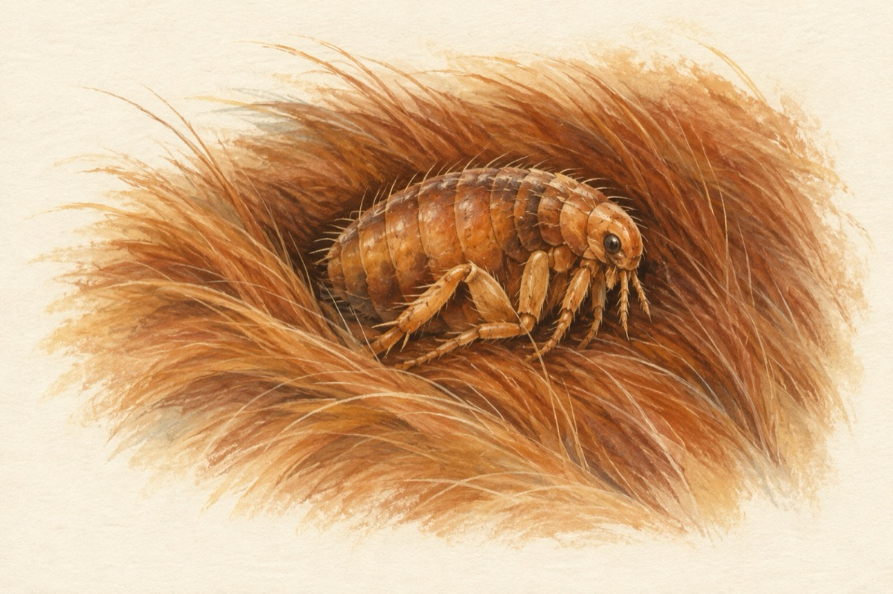

Oare cine-i
Să nu credeți că-i vreun cangur,
Greiere sau vreo lăcustă,
Dar e-un campion v-asigur,
Un sportiv de mare cursă.
Are titlu mondial.
Când s-avântă-n săritură,
Nu cunoaște vreun rival
Și e as în mușcătură!
Este foarte mic la stat,
Dar are-o putere mare;
Mută și un elefant,
Dacă-i stă cumva în cale.
Iar când este obosit
Și vrea somnul să-și încerce,
Stă în blănuri liniștit
Bănuiți cumva de ce?
Fiindcă e un ..........!
Oare cine-i? Arată răspunsul
Puricele
Vasile Groza